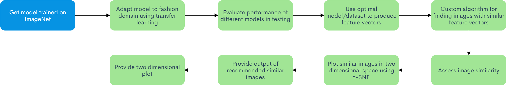
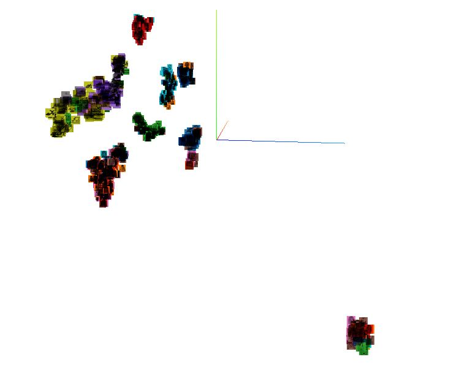
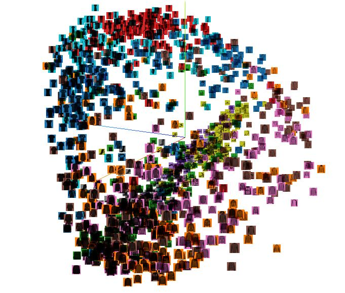
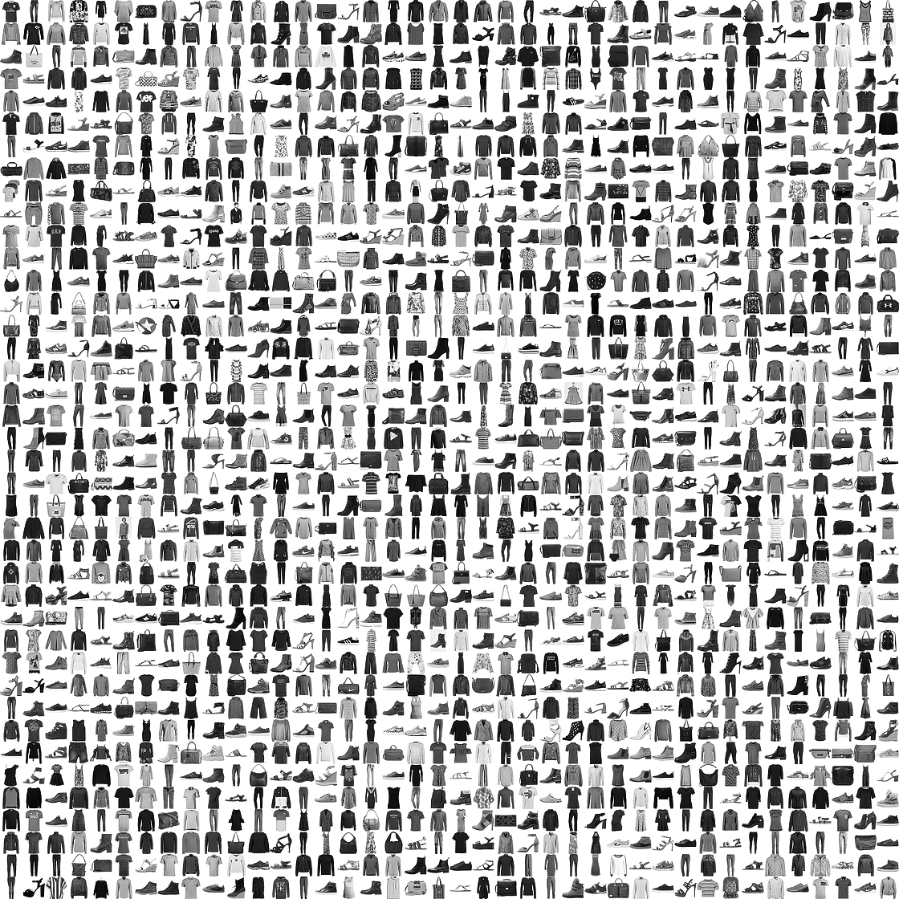

Midsemester Report
Visual Search Based Recommendation System
Syeda Arzoo Irshad, Noah Meine, Jared VeerhoffFall 2020 ECE 4554/5554 Computer Vision: Course Project
Virginia Tech

Abstract
Many current visual recommendation systems do not allow a user to visualize the difference or similarity between images. In our project, we implement our own visual recommendation system. Our project allows a user to visualize the similarity between their input image and other images in two dimensional space. Our project is tailored to work with fashion items (clothes, brands, outfits), as there are many exciting applications for visual recommendation in the fashion/e-commerce domain.We use a pre-trained model in image classification based on the VGG-16 model because of its strong performance in visual recognition. We then implement transfer learning to optimize its performance with fashion items by using the DeepFashion and/or Fashion MNIST datasets. In order to quantify and assess image similarity, we will implement our own algorithm that uses the outputs of our retrained model as data. To perform a two deminsional visualization of image similarity, we use t-SNE. We will deploy our project as a self-contained application. The application will take an input image and provide the user with recommended similar or complementary items, and a visual representation of how similar certain images are to the input image.
Introduction
Approach
Here is a flowchart of the approach we will continue to build upon to accomplish our project goals.

The technical approach we will follow begins with using a model such as VGG-16 that uses pretrained weights to produce feature vectors. Then, we will adapt this model to the fashion domain for using transfer learning. This allows us to fine-tune a model for the purposes of our project quickly. This procedure may even be accelerated by using a cloud computing service to generate the best results possible. We will then perform experiments on different models and select a configuration that best suits our desired performance.
We will use the selected model to produce feature vectors for a user specified input image, and implement a custom algorithm to find images with similar attributes. We will then assess similarity between images using these vectors, and plot them in low dimensional space using t-SNE and/or PCA in order provide a visualization. We will experiment with different metrics of image similarity to provide the user with a list of top recommendations of similar images, and a visualization of the image similarity.
Progress - ADD YOUR PROGRESS HERE
At this point in the project, we have performed several experiments in adding layers to the VGG16 model. We have also applied transfer learning using the Fashion MNIST Dataset (see sections below). In addition, we have performed t-SNE and PCA visualizations of the Fashion MNIST dataset that we will build upon in our visual recommendation system. Our model performs well on this dataset.
In order to perform t-SNE visualizations with projections of Fashion MNIST images, we leveraged tensorflow and tensorboard, as well as google colab for access to optimized GPU hardware. We utilized code that can be found here (Embeddings Visualization with Fashion MNIST) to perform embedded projections with access to sprite images. We utilize this code as a means to visualize sprite images in low deminsional space because it provides interesting indicators for image similarity. Ultimatly, we plan to extend this code to support our application.
Obstacles - ADD ANY OBSTACLES YOU FACED HERE
One obstacle we faced while attempting to implement transfer learning was trying to speed up the training process in order to perform more experiments. We overcame this obstacle with the help of google colab, which offers free access to optimized GPU hardware. Another obstacle we faced when trying to perform t-SNE visualizations of our data was that the documentation for tensorboard did not provide any similar refrence material for our desired use case. To overcome this obstacle, we utilized the code refrenced above.
Experiments and Results
Model and DatasetIn order to perform transfer learning on the VGG16 model, we used the Fashion MNIST dataset. This dataset is well known for fashion related image classification and allows us to produce feature vectors well alongside the VGG architecture. The dataset contains a training set of 60,000 examples and a test set of 10,000 examples. Each example is a 28x28 grayscaleimage that contains a label from 10 possible classes. The training and test labels are from one of the following classes:
- 0 T-shirt/top
- 1 Trouser
- 2 Pullover
- 3 Dress
- 4 Coat
- 5 Sandal
- 6 Shirt
- 7 Sneaker
- 8 Bag
- 9 Ankle boot
Next, we adapted the dataset to support the base VGG16 model by adding an additional 2 color channels and scaling the images to 48x48 pixels using openCV methods. We then defined our base VGG16 model using pretrained weights and removed the top layer used for classification. In order to adapt the model to the Fashion MNIST dataset, we added several layers to flatten the last VGG16 output layer and classify the images into 10 classes. Here is a summary of the model we created.
_________________________________________________________________
Layer (type) Output Shape Param #
=================================================================
vgg16 (Functional) (None, 1, 1, 512) 14714688
_________________________________________________________________
flatten_1 (Flatten) (None, 512) 0
_________________________________________________________________
fc1 (Dense) (None, 1024) 525312
_________________________________________________________________
predictions (Dense) (None, 10) 10250
=================================================================
Total params: 15,250,250
Trainable params: 7,614,986
Non-trainable params: 7,635,264
Layer (type) Output Shape Param #
=================================================================
vgg16 (Functional) (None, 1, 1, 512) 14714688
_________________________________________________________________
flatten_1 (Flatten) (None, 512) 0
_________________________________________________________________
fc1 (Dense) (None, 1024) 525312
_________________________________________________________________
predictions (Dense) (None, 10) 10250
=================================================================
Total params: 15,250,250
Trainable params: 7,614,986
Non-trainable params: 7,635,264
Transfer Learning
The next step in our approach was applying transfer learning. We used categorical (one hot) encoding for our training, validation, and test labels. In addition, we used a train/test split with a test_size of 0.2. Here is an excerpt of our training script that uses the sklearn train_test_split function.
x_train, x_validate, y_train_one_hot, y_validate_one_hot = train_test_split(
x_train, y_train_one_hot, test_size=0.2, random_state=13,
)
x_train, y_train_one_hot, test_size=0.2, random_state=13,
)
The metrics that we used to evaluate our model during the transfer learning procedure were categorical accuracy and categorical crossentropy for loss. We gathered data about the transfer learning process using tensorboard, and performed testing on the model post transer learning as well. Here is a complete summary of the transfer learning procedure, and some plots collected using tensorboard.
Epoch 1/12
375/375 [==============================] - 23s 62ms/step - loss: 0.4312 - categorical_accuracy: 0.8467 - val_loss: 0.3378 - val_categorical_accuracy: 0.8791
Epoch 2/12
375/375 [==============================] - 23s 61ms/step - loss: 0.2597 - categorical_accuracy: 0.9059 - val_loss: 0.2599 - val_categorical_accuracy: 0.9071
Epoch 3/12
375/375 [==============================] - 23s 62ms/step - loss: 0.2212 - categorical_accuracy: 0.9183 - val_loss: 0.2496 - val_categorical_accuracy: 0.9113
Epoch 4/12
375/375 [==============================] - 23s 62ms/step - loss: 0.1972 - categorical_accuracy: 0.9269 - val_loss: 0.2621 - val_categorical_accuracy: 0.9104
Epoch 5/12
375/375 [==============================] - 23s 62ms/step - loss: 0.1799 - categorical_accuracy: 0.9353 - val_loss: 0.2461 - val_categorical_accuracy: 0.9164
Epoch 6/12
375/375 [==============================] - 23s 62ms/step - loss: 0.1655 - categorical_accuracy: 0.9399 - val_loss: 0.2256 - val_categorical_accuracy: 0.9213
Epoch 7/12
375/375 [==============================] - 24s 63ms/step - loss: 0.1519 - categorical_accuracy: 0.9447 - val_loss: 0.2367 - val_categorical_accuracy: 0.9214
Epoch 8/12
375/375 [==============================] - 23s 63ms/step - loss: 0.1391 - categorical_accuracy: 0.9493 - val_loss: 0.2597 - val_categorical_accuracy: 0.9179
Epoch 9/12
375/375 [==============================] - 24s 63ms/step - loss: 0.1280 - categorical_accuracy: 0.9537 - val_loss: 0.2467 - val_categorical_accuracy: 0.9189
Epoch 10/12
375/375 [==============================] - 24s 63ms/step - loss: 0.1201 - categorical_accuracy: 0.9561 - val_loss: 0.2632 - val_categorical_accuracy: 0.9241
Epoch 11/12
375/375 [==============================] - 23s 63ms/step - loss: 0.1139 - categorical_accuracy: 0.9591 - val_loss: 0.3109 - val_categorical_accuracy: 0.9132
Epoch 12/12
375/375 [==============================] - 23s 63ms/step - loss: 0.1070 - categorical_accuracy: 0.9618 - val_loss: 0.2575 - val_categorical_accuracy: 0.9220
375/375 [==============================] - 23s 62ms/step - loss: 0.4312 - categorical_accuracy: 0.8467 - val_loss: 0.3378 - val_categorical_accuracy: 0.8791
Epoch 2/12
375/375 [==============================] - 23s 61ms/step - loss: 0.2597 - categorical_accuracy: 0.9059 - val_loss: 0.2599 - val_categorical_accuracy: 0.9071
Epoch 3/12
375/375 [==============================] - 23s 62ms/step - loss: 0.2212 - categorical_accuracy: 0.9183 - val_loss: 0.2496 - val_categorical_accuracy: 0.9113
Epoch 4/12
375/375 [==============================] - 23s 62ms/step - loss: 0.1972 - categorical_accuracy: 0.9269 - val_loss: 0.2621 - val_categorical_accuracy: 0.9104
Epoch 5/12
375/375 [==============================] - 23s 62ms/step - loss: 0.1799 - categorical_accuracy: 0.9353 - val_loss: 0.2461 - val_categorical_accuracy: 0.9164
Epoch 6/12
375/375 [==============================] - 23s 62ms/step - loss: 0.1655 - categorical_accuracy: 0.9399 - val_loss: 0.2256 - val_categorical_accuracy: 0.9213
Epoch 7/12
375/375 [==============================] - 24s 63ms/step - loss: 0.1519 - categorical_accuracy: 0.9447 - val_loss: 0.2367 - val_categorical_accuracy: 0.9214
Epoch 8/12
375/375 [==============================] - 23s 63ms/step - loss: 0.1391 - categorical_accuracy: 0.9493 - val_loss: 0.2597 - val_categorical_accuracy: 0.9179
Epoch 9/12
375/375 [==============================] - 24s 63ms/step - loss: 0.1280 - categorical_accuracy: 0.9537 - val_loss: 0.2467 - val_categorical_accuracy: 0.9189
Epoch 10/12
375/375 [==============================] - 24s 63ms/step - loss: 0.1201 - categorical_accuracy: 0.9561 - val_loss: 0.2632 - val_categorical_accuracy: 0.9241
Epoch 11/12
375/375 [==============================] - 23s 63ms/step - loss: 0.1139 - categorical_accuracy: 0.9591 - val_loss: 0.3109 - val_categorical_accuracy: 0.9132
Epoch 12/12
375/375 [==============================] - 23s 63ms/step - loss: 0.1070 - categorical_accuracy: 0.9618 - val_loss: 0.2575 - val_categorical_accuracy: 0.9220
Here is the final test accuracy and loss.
Test loss: 0.26292872428894043
Test accuracy: 0.9182000160217285
Test accuracy: 0.9182000160217285
MODIFY THIS AS NECESSARY
Qualitative Results
t-SNE and PCA VisualizationCurrently, our system can support t-SNE and PCA visualizations of input data. Here is a sample t-SNE projection on 1600 Fashion MNIST images in 3 dimensional space. Notice how groups of similar images form in the image.

Here is a sample PCA projection of the same dataset in 3 dimensional.

Here is a 3 dimensional t-SNE projection created using feature vectors from our system.

MODIFY THIS AS NECESSARY
Conclusion and Future Work
This report has described...References
Fashion MNISThttps://www.kaggle.com/zalando-research/fashionmnist
A Comprehensive Hands-on Guide to Transfer Learning with Real-World Applications in Deep Learning | by Dipanjan (DJ) Sarkar | Towards Data Science
https://towardsdatascience.com/a-comprehensive-hands-on-guide-to-transfer-learning-with-real-world-applications-in-deep-learning-212bf3b2f27a
Transfer Learning with Convolutional Neural Networks in PyTorch | by Will Koehrsen | Towards Data Science
https://towardsdatascience.com/transfer-learning-with-convolutional-neural-networks-in-pytorch-dd09190245ce
Embeddings Visualization with Fashion MNIST
https://github.com/markjay4k/Fashion-MNIST-with-Keras/blob/master/pt3%20-%20FMINST%20Embeddings.ipynb
Visualizing Data using the Embedding Projector in TensorBoard
https://www.tensorflow.org/tensorboard/tensorboard_projector_plugin